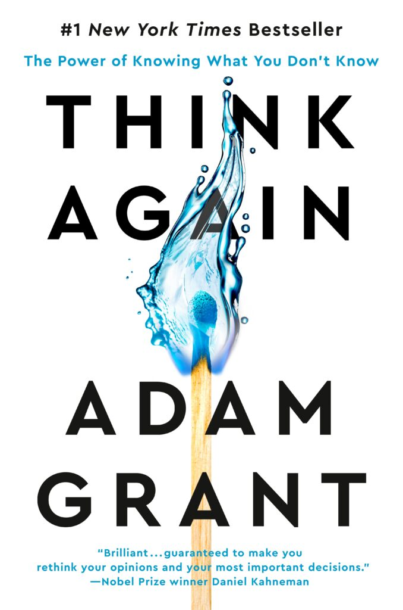

Lab 5, CMWEB 220
This is an example page for different positioning types.
Relative Positioning:

This image uses relative positioning. It allows us to position elements
at certain distances away from its original place on the page. We can do
this by using the top, bottom, left, and right properties. The image
above is translated to the right 100% to place it roughly in the middle
of the page. I did this by setting its position to relative and then
adding "left: 100%" to the element.
Absolute Positioning:
The image here is using absolute positioning. This allows us to move an
element wherever we'd like. The best part of this property is the way it
does not interfere with the flow of other elements. When an element is
absolute, it pops out of the regular layout and positions itself to its
positioned ancestor (or the body, if there is no ancestor). Absolute
positioning is great for popups that don't interfere with the layout of
the page.
Fixed Positioning:
The image that has fixed positioning is actually floating to the left of
this page. It stays in the same spot even when the page is scrolled.
Fixed positioning is much like absolute positioning, except that the
fixed positioning allows an element to stay in the same place.
Z-Index Example:
First
Second
Third
Fourth
Fifth
This is an example of how to use the z-index property. Each element can
be assigned a z-value which prioritizes the stacking order. An element
with a z-index of 3 will be placed over any element with a z-index below
3 (e.g. 2, 1, 0, -1...). For this example, the blue first box has a
z-index of 4, placing it on top of the other elements. The purple second
box is given a z-index of 3, and so on until the green fifth box has a
z-index of 0.